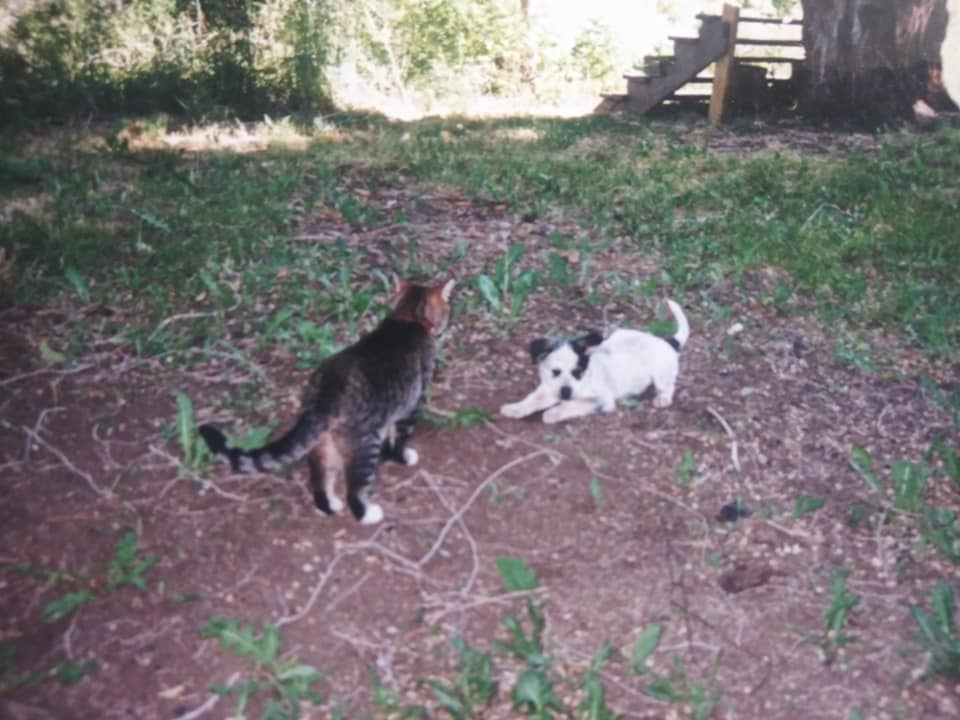
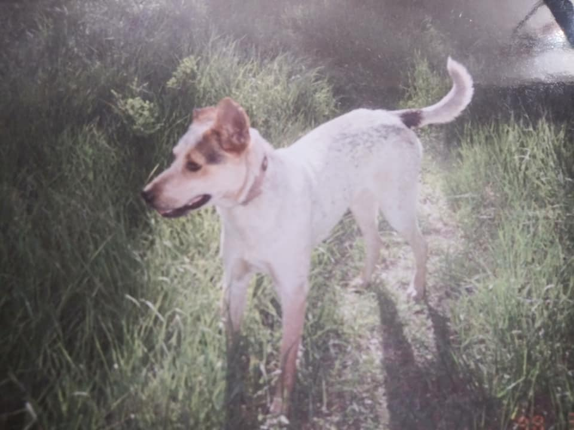
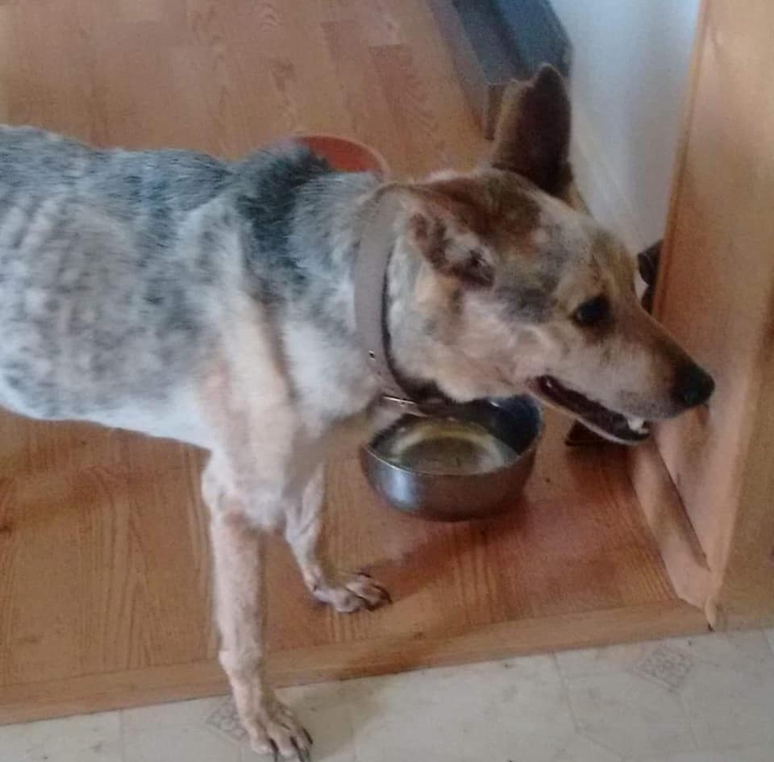
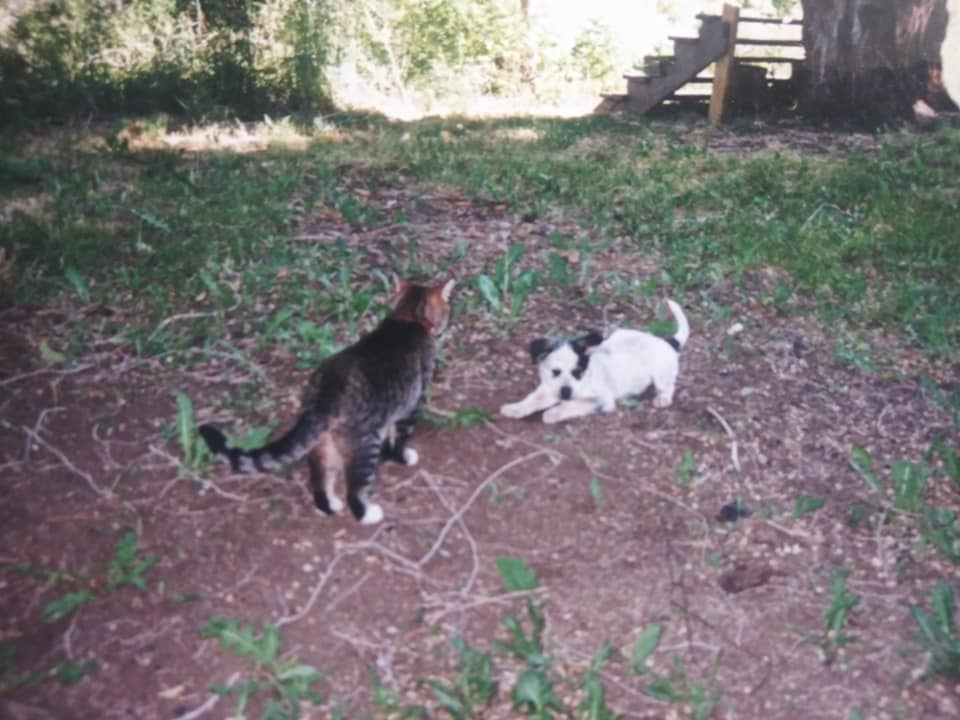
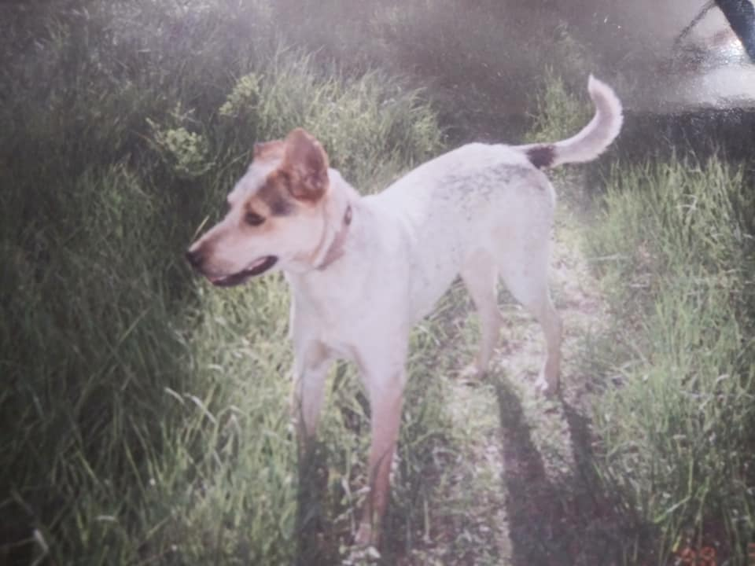
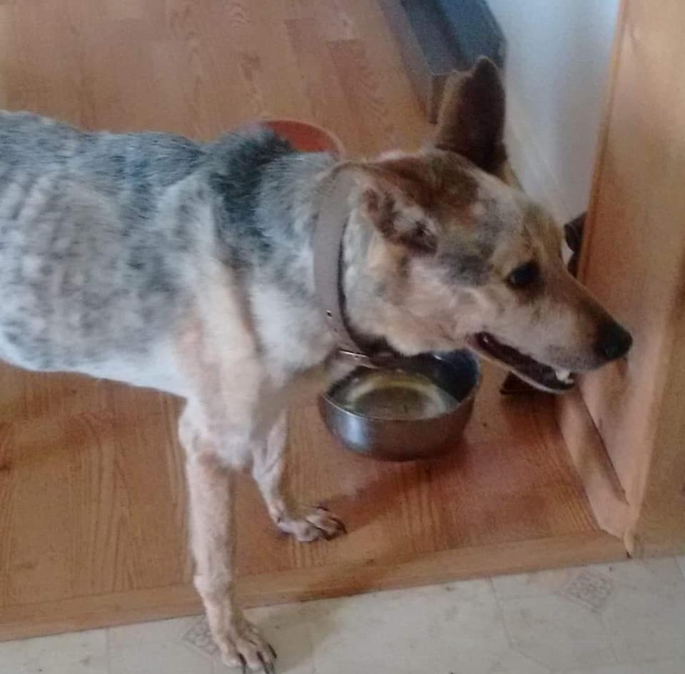

  
  
The following is how to care for a Australian Cattle Dog (ACD) so they live a long life!
Exercise and Training
Step 1: Exercise your ACD well and often.
Step 2: Train Your ACD basic dog obedience
Step 3: Keep control of your ACD in public with a collar and leash always
Step 4: Consistant outdoor breaks are a must for the ACD.
Step 5: Socialize your ACD!
Step 6: Enroll your ACD in obedience or agility classes to keep their mind occupied!
Diet and Health
Step 1: Feed your ACD high-quality dog food formulated for active dogs
Step 2: Take your ACD to the veterinarian for routine check-ups and basic health maitenance annually.
Step 3: Keep your ACD on a regular flea and tick regimen to prevent infestations
Grooming
Step 1: Brush your ACD at least once a week.
Step 2: Bathe your ACD as needed, not often, as needed natural oils can be stripped, resulting in dry skin.
Step 3: Trim your ACD's nails as needed
Step 4: Clean your ACD'S teeth regularly, access to Greenies and non-splintering bones are helpful
Items You Will Need
Leash
Crate
Toys
High-quality dog food
Brush
Soft-bristle toothbrush
Flea treatment
Heartworm preventative